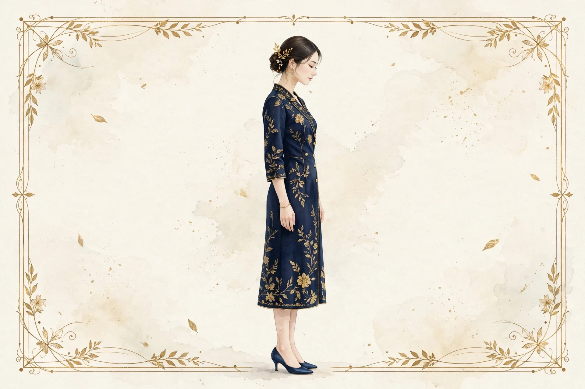

関内で坂道を歩いた日に気になる巻き肩｜上り下りの姿勢とセルフケア

横浜・関内の坂道を歩いた日、帰宅して鏡を見ると、肩がいつもより前に丸まっているように感じることはありませんか。関内周辺は、山手へ向かう坂や、駅から海側へ下る道など、緩やかな上り下りの多いエリアです。坂道を歩いた日は、足の疲れだけでなく、肩まわりの張りや姿勢の変化が気になる方も少なくありません。巻き肩は、肩が体の前方へ丸まり、胸が閉じたような姿勢になっている状態を指す言葉として、よく使われています。今回は、坂道を歩いた日に巻き肩が気になる理由を整理し、肩まわりをゆるめるセルフケアをご紹介します。
巻き肩とは、どんな状態か
巻き肩とは、肩甲骨が外側へ開き、肩が前方へ出たような姿勢のことを指す言葉として使われています。肩が前に出ると、胸の前の筋肉が縮こまりやすく、背中の上の筋肉が伸ばされやすい状態になります。デスクワークで前かがみの姿勢が続いた日や、スマートフォンを見る時間が長かった日にも、肩の位置が前に寄りやすいと言われています。巻き肩そのものが病気というわけではなく、姿勢のくせや体の使い方の積み重ねが現れたものとして捉えられています。肩まわりがこわばると、首や背中の張り、頭の重さを一緒に感じやすくなることもあります。自分の姿勢に気づくきっかけとして、鏡で横向きの姿勢を確認したり、肩をぐるりと回したときの動きを確かめたりする方法があります。関内で気になる姿勢・猫背のページでは、姿勢の見直し方をさらに詳しくまとめています。
坂道を歩いた日に巻き肩が気になりやすい理由
まず考えられるのは、坂道の上りでの前傾姿勢です。足の力で体を持ち上げようとすると、上体が前に倒れ、肩も一緒に前に出やすくなります。荷物を持って上る日は、バッグの重さで肩がさらに前に引かれやすくなります。二つ目は、坂道の下りでの踏ん張りです。体が前に進みすぎないように足で踏ん張るため、膝や太ももに力が入りやすく、肩にも力が入りやすくなります。三つ目は、視線の下がりです。上りでも下りでも、足元に意識が向くと視線が下がり、頭が前に出やすくなります。頭の位置が前に出ると、肩も前に引かれやすくなると考えられています。四つ目は、坂道の長さです。関内の坂道は、急な階段ほどの傾斜は少ないものの、駅から山手方面や元町・中華街方面へ向かう道では、緩やかな上りが長く続きます。長い上りを歩いた日は、足の疲れとともに肩まわりの張りを感じやすくなることがあります。五つ目は、歩き方のくせです。歩幅が小さくなり、腕の振りが小さくなると、肩まわりの動きが少なくなり、こわばりを感じやすくなると言われています。これらの要因は一つだけで巻き肩を決めるものではなく、いくつかが重なって感じられ方が変わるものと考えられています。関内で気になる脚のむくみのページでも、坂道を歩いた日の足のケアをまとめています。
坂道を歩いた日に取り入れられるセルフケア
坂道を歩いた日のセルフケアは、特別な道具や大きな時間は必要ありません。帰宅後の短い時間を、肩まわりをゆるめる時間に変えてみてください。
肩を大きく回して、肩甲骨を動かす
まず、両肩をゆっくりと大きく回してみてください。前回しと後ろ回しを、それぞれ5回ずつ。肩甲骨が動いているのを意識しながら、呼吸を止めずにゆっくり回すのがポイントです。肩をすくめて力を入れてから、ストンと落とす動きも、肩まわりの緊張を感じる日の工夫のひとつです。肩の動きが硬いと感じるときは、無理に大きく回さず、気持ちよいと感じる範囲に留めましょう。関内で気になる肩こりのページでは、肩の張りを感じる日の過ごし方もまとめています。
胸を開くストレッチ
壁のそばに立ち、片手を壁について、体をゆっくりと反対側へ開いてみてください。胸の前が心地よく伸びる位置で、ゆっくり深呼吸をしながら数秒保ちます。左右を入れ替えて同じように行いましょう。両手を後ろで組んで、胸を開くようにゆっくり持ち上げる動きも、取り入れやすい方法です。背中を丸めたまま行うと胸が開きにくいので、背筋を伸ばしてから行うと、伸びを感じやすくなります。痛みを感じるときは、すぐにやめて、無理のない範囲で行いましょう。
坂道のあとの肩まわりをほぐす工夫
坂道を歩いたあとは、温めたタオルを首の後ろや肩に当てるのも取り入れやすい方法です。お風呂の時間に、湯船で肩までつかりながら肩をゆっくり回すのも、肩まわりをゆるめる時間になります。寝る前に、仰向けになって両腕を横に広げ、胸を開いた姿勢で深呼吸を数回繰り返すのも、肩まわりのこわばりを感じる日の工夫のひとつです。日々の姿勢の積み重ねが、肩の位置の感じ方につながると考えられています。関内で気になる腰の重さ・腰痛のページでは、腰まわりのケアについてもまとめています。
荷物の持ち方と歩き方の見直し
坂道を歩く日は、荷物の持ち方を見直してみてください。片方の肩だけにバッグをかけると、肩が片側へ引かれやすくなります。リュックやショルダーバッグを両肩で使ったり、荷物を左右で持ち替えたりすると、肩への負担の偏りを受けにくくなります。歩くときは、視線を少し遠くに向けて、腕を軽く振ることを意識してみてください。歩幅をいつもより少し大きくすると、肩まわりの動きも大きくなりやすくなります。坂道の途中で立ち止まり、肩を回して深呼吸をするひと休みを入れるのも、肩まわりの張りを感じにくい工夫のひとつです。
関内の坂道に合わせた小さな工夫
関内駅から山手方面へ向かう道や、元町・中華街方面への道は、緩やかな上りが長く続きます。坂道を歩く日は、時間に余裕を持たせ、急いで上らずに済む組み立てにすると、肩に力が入りにくくなります。坂の途中で立ち止まり、横浜の街並みを眺めながら深呼吸をするひと休みも、肩まわりをゆるめる時間になります。桜木町駅や関内駅からの電車やバスを使い、歩く距離を短くする工夫も取り入れられます。帰宅したら、まず肩を大きく回してから、温かい飲み物をゆっくり飲む時間を意識してみてください。坂道を歩いた日の過ごし方は、特別な準備ではなく、出かける前と帰宅後の小さな工夫の積み重ねです。
受診の目安
関内で、坂道を歩いた日の巻き肩と向き合う時間を
坂道を歩いた日に巻き肩が気になるときは、体の声に耳を傾けるきっかけとして捉えてみてください。肩を大きく回す動き、胸を開くストレッチ、荷物の持ち方と歩き方の見直し。この三つを坂道を歩いた日の過ごし方に組み込むことで、肩まわりの張りを感じにくくなります。関内で気になる姿勢・猫背についても、同じように要因の整理とセルフケアをまとめていますので、あわせてご覧ください。美容整体ステラ・プロキオンは、横浜・関内／桜木町エリアで開院準備中の女性専用サロンです。オイルマッサージと美容整体で、坂道を歩いた日に巻き肩が気になった日の体のケアをお手伝いできるよう、準備を進めています。近日開院予定（受付は開始次第、このサイトとLINE公式でお知らせします）。